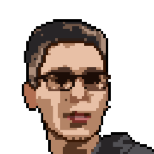
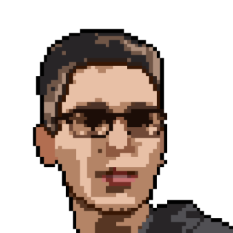

PaGeR: Panorama Geometry Estimation
High-Resolution Depth and Normals using Single-Step Diffusion Models
 Dominik Narnhofer¹

Nando Metzger¹
Dominik Narnhofer¹

Nando Metzger¹
 Denis Rozumny¹
Denis Rozumny¹
 Konrad Schindler¹
Konrad Schindler¹
 Nikolai Kalischek²
Nikolai Kalischek²
Abstract
Monocular geometry estimation has greatly advanced in recent years and has matured to the point where
off-the-shelf, foundational models are readily available. Several such models are based on denoising
diffusion, which has shown a remarkable ability to transfer learned priors from color image generation to
(image-conditional) geometry reconstruction, by fine-tuning on large synthetic depth datasets. We extend
diffusion-based monodepth to the more challenging task of estimating full panoramic 3D geometry.
We leverage recent advances in panorama generation and diffusion fine-tuning and introduce PaGeR
(Panoramic Geometry Reconstruction): a one-step diffusion model trained directly in pixel space,
which enables high-resolution prediction of panoramic depth and surface normals, with strong generalization to
new, unseen environments. As part of our effort, we introduce a synthetic high-resolution dataset of indoor
and outdoor scenes with associated metric depth and surface normals. Extensive experiments show that our model
produces coherent, metrically accurate, sharp depth and normal maps, and outperforms prior approaches not only
in domain but also in few-shot and zero-shot scenarios.
Method

Cubemap Projection
We project the equirectangular panorama into a cubemap representation to avoid polar distortion and leverage standard convolutional architectures.
Pixel-Space Diffusion
Unlike latent models, PaGeR operates in pixel space, preserving the high-frequency details essential for accurate normal estimation and depth discontinuities.
One-Step Inference
Through distillation, we achieve high-quality geometry estimation in a single inference step, making the method computationally efficient for high-resolution outputs.
Interactive Results
Panoramic Depth
Select a scene to visualize depth geometry.
Surface Normals
Slide to compare RGB vs Predicted Normals.
3D Point Cloud
Reconstructed geometry from depth.
Citation
@article{bozic2026pager,
title={PaGeR: Panorama Geometry Estimation using Single-Step Diffusion Models},
author={Bozic, Vukasin and Slavkovic, Isidora and Narnhofer, Dominik and Metzger, Nando and Rozumny, Denis and Schindler, Konrad and Kalischek, Nikolai},
journal={arXiv preprint},
year={2025}
}